8.1 Infinite Impulse Response (IIR) Filter Design
Digital Signal Processing
Imron Rosyadi
Bilinear Transformation Method & Lowpass Prototype Transformations
Learning Objectives
By the end of this session, you should be able to:
- Describe the mathematical format of an IIR filter (difference equation, transfer function, impulse response).
- Explain why IIR filters can achieve sharp responses with relatively low order, and what is traded off.
- Use lowpass prototype transformations to obtain analog lowpass, highpass, bandpass, and bandstop filters.
- Derive and interpret the bilinear transform (BLT) as a mapping from the analog s‑plane to the digital z‑plane.
- Explain frequency warping and why prewarping is needed in BLT‑based IIR filter design.
- Apply a structured BLT design procedure to obtain a digital IIR filter that meets given specifications.
8.1 IIR Filter Format – Intuition
IIR filter = recursive digital filter.
Signal‑flow intuition (for a simple 1st‑order IIR):
- Current output depends on:
- current input sample(s)
- past inputs
- past outputs (feedback)
IIR Difference Equation and Transfer Function
General causal LTI IIR filter:
Difference equation:
\[ y(n)=b_0 x(n)+b_1 x(n-1)+\cdots +b_M x(n-M) \quad -\, a_1 y(n-1)-\cdots-a_N y(n-N) \]
(Your book uses the convention that the denominator is written as \(1+a_1 z^{-1}+\dots\).)
Transfer function:
\[ H(z) = \frac{Y(z)}{X(z)} = \frac{b_0 + b_1 z^{-1} + \cdots + b_M z^{-M}}{1 + a_1 z^{-1} + \cdots + a_N z^{-N}} \]
Key properties:
- Numerator coefficients: \(b_i\) → zeros.
- Denominator coefficients: \(a_i\) → poles.
- Impulse response: generally infinite‑length (decays but never strictly ends).
Important
Stability condition
For a causal IIR filter to be BIBO‑stable, all poles must lie strictly inside the unit circle in the z‑plane.
Example 8.1 – A Simple IIR Filter
Given
\[ y(n) = 0.2x(n) + 0.4x(n-1) + 0.5y(n-1) \]
- Transfer function
Apply the z‑transform (zero initial conditions):
\[ Y(z) = 0.2X(z) + 0.4 z^{-1} X(z) + 0.5 z^{-1} Y(z) \]
Rearrange:
\[ Y(z) - 0.5 z^{-1} Y(z) = (0.2 + 0.4 z^{-1}) X(z) \]
So
\[ H(z)=\frac{Y(z)}{X(z)}=\frac{0.2+0.4z^{-1}}{1-0.5z^{-1}} \]
- Nonzero coefficients
- \(b_0 = 0.2,\quad b_1 = 0.4\)
- Denominator: \(1 - 0.5 z^{-1} \Rightarrow a_1 = -0.5\)
- Impulse response
Input \(x(n) = \delta(n)\), impulse response \(h(n)\) has z‑transform \(H(z)\).
Rewrite \(H(z)\):
\[ H(z) = \frac{0.2}{1 - 0.5 z^{-1}} + \frac{0.4 z^{-1}}{1 - 0.5 z^{-1}} \]
Inverse z‑transform using known pair
\[ \mathcal{Z}^{-1}\left\{\frac{1}{1-az^{-1}}\right\} = a^n u(n) \]
gives
\[ h(n) = 0.2(0.5)^n u(n) + 0.4(0.5)^{n-1} u(n-1) \]
First few samples:
- \(h(0)=0.2\)
- \(h(1)=0.2\cdot0.5 + 0.4\cdot(0.5)^0 = 0.1 + 0.4 = 0.5\)
- \(h(2)=0.2(0.5)^2 + 0.4(0.5)^1 = 0.05 + 0.2 = 0.25\)
- … continues forever (geometric decay).
IIR vs FIR – Design Tradeoffs
IIR Filters
- Recursive: depend on past outputs.
- Typically lower order for given magnitude specs.
- Computationally cheaper (fewer multiplies/adds).
- Non‑linear phase in general.
- Potential stability issues if poles not inside unit circle.
FIR Filters
- Nonrecursive: depend only on past inputs.
- Typically higher order for same specs.
- Linear phase easy to obtain (e.g., symmetric coefficients).
- Guaranteed stable if finite length.
- Often preferred in applications where phase distortion is critical (e.g., data communications, some audio).
Real‑world ECE applications where IIR is common:
- Low‑order audio tone controls (bass/treble shelves).
- Analog‑style equalizers (biquad sections).
- Control systems where digital filters approximate analog compensators.
Goal of IIR Filter Design
Given desired digital specifications (e.g., lowpass with passband ripple, stopband attenuation, cutoff frequency), we want to determine:
- Numerator coefficients \(b_0, \dots, b_M\)
- Denominator coefficients \(a_1, \dots, a_N\)
such that:
- Passband meets gain and ripple specs.
- Stopband meets attenuation specs.
- Cutoff or band edges occur at desired digital frequencies.
- Filter is stable and realizable.
We will use the bilinear transformation (BLT) method together with analog lowpass prototypes (Butterworth, Chebyshev).
Big Picture: BLT‑Based IIR Design Flow
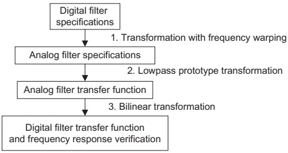
FIG. 8.1 General procedure for IIR filter design using BLT.
Key steps:
- Digital specs → Analog specs (prewarping).
- Analog filter design from lowpass prototype.
- Bilinear transform: map \(s\)‑domain filter to \(z\)‑domain filter.
- Verify digital magnitude/phase response.
8.2.1 Analog Filters via Lowpass Prototype
Idea:
- Design a normalized analog lowpass prototype \(H_P(s)\) with cutoff at 1 rad/s.
- Transform this prototype into practical analog lowpass / highpass / bandpass / bandstop filters with desired cutoff and bandwidth.
- Later, convert the analog filter into a digital filter via BLT.
Prototype example (1st order):
\[ H_P(s) = \frac{1}{s+1} \]
- Cutoff at \(|\omega| = 1\) rad/s (gain \(=1/\sqrt{2}\)).
- DC gain = 1.
Prototype Frequency Response – Normalized Lowpass
For prototype
\[ H_P(s) = \frac{1}{s+1} \]
Frequency response:
\[ H_P(j\nu) = \frac{1}{j\nu + 1} \]
Magnitude:
\[ |H_P(j\nu)| = \frac{1}{\sqrt{1+\nu^2}} \]
Evaluate:
- \(\nu = 0\): \(|H_P(j0)| = 1\) (DC gain)
- \(\nu = 1\): \(|H_P(j1)| = \frac{1}{\sqrt{2}} \approx 0.707\) → \(-3\) dB cutoff
- \(\nu = 100\): \(\approx 0.00995\)
- \(\nu = 10\,000\): \(\approx 0.0001\)
This is a normalized lowpass: cutoff frequency = 1 rad/s.
From Prototype to Practical Analog Lowpass
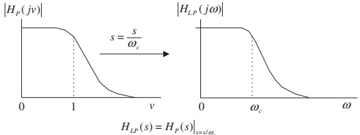
FIG. 8.2 Analog lowpass prototype transformation into a lowpass filter.
Transformation:
- Want a lowpass with cutoff \(\omega_c\) rad/s.
- Replace \(s\) in prototype with \(s / \omega_c\).
So
\[ H(s) = H_P\!\left(\frac{s}{\omega_c}\right) = \frac{1}{s/\omega_c + 1} = \frac{\omega_c}{s + \omega_c} \]
Magnitude response:
\[ |H(j\omega)| = \frac{1}{\sqrt{1 + \left(\frac{\omega}{\omega_c}\right)^2}} \]
Check:
- \(\omega=0\) → gain = 1.
- \(\omega=\omega_c\) → gain = \(1/\sqrt{2}\) (−3 dB).
- Large \(\omega \gg \omega_c\) → gain ≈ 0.
Effect: frequency axis scaled by \(\omega_c\); magnitude shape unchanged.
Prototype → Analog Highpass
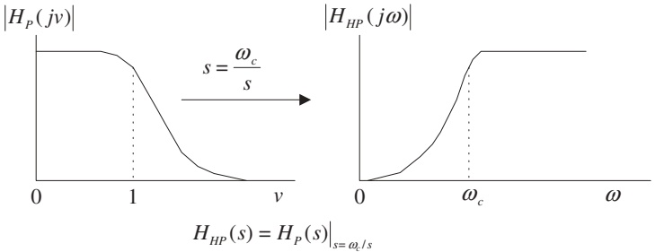
FIG. 8.3 Analog lowpass prototype transformation to the highpass filter.
Use substitution
\[ s \;\to\; \frac{\omega_c}{s} \]
Resultant highpass transfer function:
\[ H_{HP}(s) = H_P\!\left(\frac{\omega_c}{s}\right) \]
Interpretation:
- Low frequencies (\(|s|\) small) → large argument of \(H_P\) → prototype is attenuated.
- High frequencies (\(|s|\) large) → argument small → prototype passes them.
Analogy: Frequency “inversion” around \(\omega_c\).
Prototype → Analog Bandpass
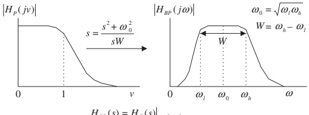
FIG. 8.4 Analog lowpass prototype transformation to the bandpass filter.
Bandpass parameters:
- Lower cutoff: \(\omega_l\)
- Upper cutoff: \(\omega_h\)
- Center (geometric mean): \(\omega_0 = \sqrt{\omega_l\omega_h}\)
- Bandwidth: \(W = \omega_h - \omega_l\)
Transformation:
\[ s \;\to\; \frac{s^2 + \omega_0^2}{s W} \]
Therefore
\[ H_{BP}(s) = H_P\!\left( \frac{s^2 + \omega_0^2}{sW} \right) \]
Resulting filter: - Passes a band around \(\omega_0\) with bandwidth \(W\). - Order is doubled relative to prototype.
Prototype → Analog Bandstop (Bandreject)
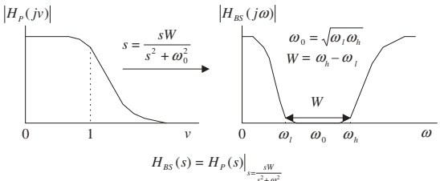
FIG. 8.5 Analog lowpass prototype transformation to a bandstop filter.
Transformation:
\[ s \;\to\; \frac{sW}{s^2 + \omega_0^2} \]
So
\[ H_{BS}(s) = H_P\!\left( \frac{sW}{s^2 + \omega_0^2} \right) \]
Again: band edges defined by \(\omega_l, \omega_h\), with center and bandwidth as before.
Summary: Analog Lowpass Prototype Transformations
Table 8.1
| Filter Type | Prototype Transformation (substitute into \(H_P(s)\)) |
|---|---|
| Lowpass | \(s \to \dfrac{s}{\omega_c}\), where \(\omega_c\) is the cutoff frequency |
| Highpass | \(s \to \dfrac{\omega_c}{s}\), where \(\omega_c\) is the cutoff frequency |
| Bandpass | \(s \to \dfrac{s^2 + \omega_0^2}{sW}\), where \(\omega_0 = \sqrt{\omega_l \omega_h}\), \(W = \omega_h - \omega_l\) |
| Bandstop | \(s \to \dfrac{sW}{s^2 + \omega_0^2}\), where \(\omega_0 = \sqrt{\omega_l \omega_h}\), \(W = \omega_h - \omega_l\) |
Tip
Design process:
- Pick prototype \(H_P(s)\) (Butterworth/Chebyshev).
- Apply the appropriate substitution from the table.
- Simplify to get \(H(s)\) (analog).
- Convert to digital via BLT (later).
Example 8.2 – From Lowpass Prototype to HP and BP
Prototype:
\[ H_P(s) = \frac{1}{s+1} \]
Design:
- Highpass with cutoff \(\omega_c = 40\) rad/s.
- Bandpass with center frequency \(\omega_0 = 10\) rad/s and bandwidth \(W = 20\) rad/s.
Example 8.2 – Highpass Design
Use transformation \(s \to \omega_c/s\):
\[ H_{HP}(s) = H_P\!\left(\frac{40}{s}\right) = \frac{1}{\frac{40}{s} + 1} = \frac{1}{\frac{40 + s}{s}} = \frac{s}{s+40} \]
This is a first‑order analog highpass filter with:
- DC gain ≈ 0
- Gain approaches 1 at high frequencies
- −3 dB at \(\omega = 40\) rad/s
Example 8.2 – Bandpass Design
Given \(\omega_0 = 10\) rad/s, \(W=20\) rad/s.
Lowpass → bandpass substitution:
\[ s \to \frac{s^2 + \omega_0^2}{sW} = \frac{s^2 + 100}{20s} \]
Thus
\[ H_{BP}(s) = H_P\!\left( \frac{s^2 + 100}{20s} \right) = \frac{1}{\frac{s^2 + 100}{20s} + 1} = \frac{1}{\frac{s^2 + 100 + 20s}{20s}} = \frac{20s}{s^2 + 20s + 100} \]
This is a 2nd‑order analog bandpass filter.
Example 8.2 – MATLAB Confirmation
Program 8.1 (corrected)
W = 0:1:200; % Analog frequency points (rad/s)
% Highpass: H_HP(s) = s / (s + 40)
B_HP = [1 0]; % s^1 + 0
A_HP = [1 40]; % s + 40
Ha = freqs(B_HP, A_HP, W);
% Bandpass: H_BP(s) = 20s / (s^2 + 20s + 100)
B_BP = [20 0]; % 20s + 0
A_BP = [1 20 100]; % s^2 + 20s + 100
Hb = freqs(B_BP, A_BP, W);
subplot(2,1,1);
plot(W, abs(Ha), 'k'); grid on;
xlabel('a) Frequency (rad/s)');
ylabel('Magnitude');
subplot(2,1,2);
plot(W, abs(Hb), 'k'); grid on;
xlabel('b) Frequency (rad/s)');
ylabel('Magnitude');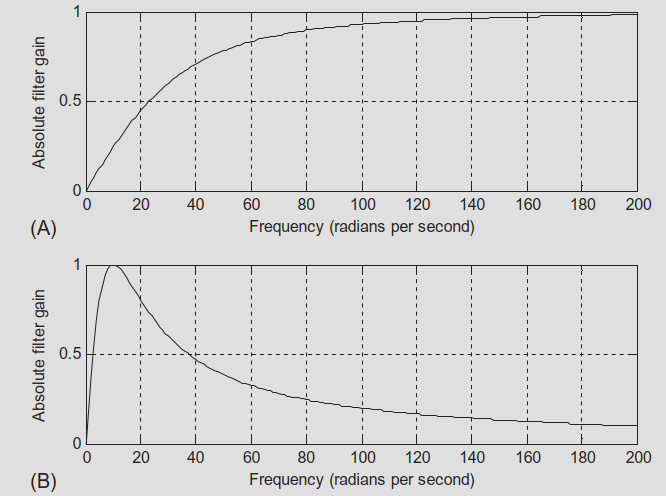
FIG. 8.6 Magnitude responses for the analog highpass and bandpass filters in Example 8.2.
8.2.2 Bilinear Transformation – From Integration
We want to map analog filters \(H(s)\) to digital filters \(H(z)\) in a way that:
- Maps the entire jω axis onto the unit circle.
- Preserves stability (left half‑plane → inside unit circle).
- Is one‑to‑one (no aliasing of frequencies).
Derivation uses the analogy of continuous‑time integration vs. trapezoidal numerical integration.
Analog Integrator
Analog integrator system:
\[ y(t) = \int_0^t x(\tau)\, d\tau \]
Apply Laplace transform:
\[ Y(s) = \frac{1}{s} X(s) \quad \Rightarrow \quad G(s) = \frac{Y(s)}{X(s)} = \frac{1}{s} \]
So integration corresponds to multiplication by \(1/s\) in the s‑domain.
Digital Approximation: Trapezoidal Integration
Numerical approximation (Fig. 8.7):
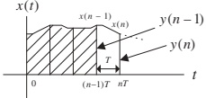
FIG. 8.7 Digital integration method to calculate the area under the curve.
Difference equation (trapezoidal rule):
\[ y(n) = y(n-1) + \frac{T}{2}\big[x(n) + x(n-1)\big] \]
Apply z‑transform (zero initial conditions):
\[ Y(z) = z^{-1} Y(z) + \frac{T}{2}\left[X(z) + z^{-1} X(z)\right] \]
Solve for \(Y(z)/X(z)\):
\[ H(z) = \frac{Y(z)}{X(z)} = \frac{T}{2} \frac{1 + z^{-1}}{1 - z^{-1}} \]
Relating \(1/s\) to Digital Integrator
We know:
- Analog integrator: \(G(s) = 1/s\)
- Digital trapezoidal integrator: \(H(z) = \dfrac{T}{2} \dfrac{1+z^{-1}}{1 - z^{-1}}\)
So we identify:
\[ \frac{1}{s} \;\approx\; \frac{T}{2} \frac{1 + z^{-1}}{1 - z^{-1}} \]
Thus
\[ s \;\approx\; \frac{2}{T} \frac{1 - z^{-1}}{1 + z^{-1}} = \frac{2z - 2}{T(z + 1)} = \frac{2}{T} \frac{z - 1}{z + 1} \]
This is the bilinear transform (up to exact algebra):
\[ s = \frac{2}{T} \frac{z - 1}{z + 1} \]
Equivalently:
\[ z = \frac{1 + sT/2}{1 - sT/2} \]
Note
The bilinear transform is thus equivalent to using the trapezoidal rule to discretize an analog system.
BLT Mapping Properties
From
\[ z = \frac{1 + sT/2}{1 - sT/2} \]
we can deduce:
- Left half‑plane (\(\Re\{s\} < 0\)) → inside the unit circle (\(|z|<1\)).
- Right half‑plane (\(\Re\{s\} > 0\)) → outside the unit circle (\(|z|>1\)).
- Imaginary axis (\(s = j\omega\)) → unit circle (\(z = e^{j\omega_d T}\)).
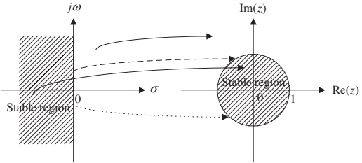
FIG. 8.8 Mapping between the s-plane and the z-plane by the BLT.
Conclusion: Stable analog filters map to stable digital filters.
Example 8.3 – Mapping Specific s‑Points to z‑Plane
Take \(T = 2\) s. Then
\[ z = \frac{1 + s}{1 - s} \]
Given
- \(s_1 = -1 + j\) (left half‑plane)
- \(s_2 = 1 - j\) (right half‑plane)
- \(s_3 = j\) (positive imaginary axis)
- \(s_4 = -j\) (negative imaginary axis)
We compute
\(z_1 = \dfrac{1 + (-1+j)}{1 - (-1+j)} = \dfrac{j}{2-j} \approx 0.4472 \angle 116.57^\circ\)
- \(|z_1| = 0.4472 < 1\) → inside unit circle.
\(z_2 = \dfrac{1+(1-j)}{1-(1-j)} = \dfrac{2-j}{j} \approx 2.2361 \angle -116.57^\circ\)
- \(|z_2| = 2.2361 > 1\) → outside unit circle.
\(z_3 = \dfrac{1+j}{1-j} = 1 \angle 90^\circ\) → unit circle (upper half).
\(z_4 = \dfrac{1-j}{1+j} = 1 \angle -90^\circ\) → unit circle (lower half).
Example 8.4 – Analog to Digital via BLT
Analog lowpass filter:
\[ H(s) = \frac{10}{s + 10} \]
Sampling period: \(T = 0.01\) s.
Design digital filter \(H(z)\) and its difference equation.
Example 8.4 – Applying BLT
BLT substitution:
\[ s = \frac{2}{T} \frac{z - 1}{z + 1} = \frac{200(z - 1)}{z + 1} \]
So
\[ H(z) = H(s)\Big|_{s=\frac{200(z - 1)}{z + 1}} = \frac{10}{\dfrac{200(z - 1)}{z + 1} + 10} \]
Simplify:
\[ H(z) = \frac{10}{\frac{200(z - 1) + 10(z + 1)}{z + 1}} = \frac{10(z + 1)}{200(z - 1) + 10(z + 1)} \]
Compute denominator:
\[ 200(z - 1) + 10(z + 1) = 210z - 190 \]
Thus
\[ H(z) = \frac{10(z + 1)}{210z - 190} = \frac{0.05(z + 1)}{1.05 z - 0.95} \]
Rewrite in standard \(z^{-1}\) form:
\[ H(z) = \frac{0.05z + 0.05}{1.05 z - 0.95} = \frac{(0.05z + 0.05)/(1.05z)}{(1.05z - 0.95)/(1.05z)} = \frac{0.0476 + 0.0476 z^{-1}}{1 - 0.9048 z^{-1}} \]
Difference equation:
\[ y(n) = 0.0476 x(n) + 0.0476 x(n-1) + 0.9048 y(n-1) \]
Frequency Mapping and Warping
We want relationship between analog frequency \(\omega_a\) and digital frequency \(\omega_d\).
On the imaginary axis:
- \(s = j\omega_a\)
- \(z = e^{j\omega_d T}\)
Plug into BLT:
\[ j\omega_a = \frac{2}{T} \frac{e^{j\omega_d T} - 1}{e^{j\omega_d T} + 1} \]
After simplification, we obtain:
\[ \omega_a = \frac{2}{T} \tan\!\left(\frac{\omega_d T}{2}\right) \]
Inverse relation:
\[ \omega_d = \frac{2}{T} \tan^{-1}\!\left(\frac{\omega_a T}{2}\right) \]
This mapping is nonlinear → frequency warping.
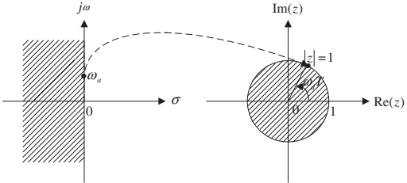
FIG. 8.9 Frequency mapping from the analog domain to the digital domain.
Frequency Warping Visualization
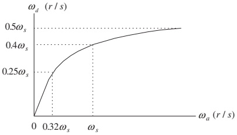
FIG. 8.10 Frequency warping from BLT.
Observations:
- For \(0 \leq \omega_d \leq 0.25\omega_s\), mapping is nearly linear:
- \(0 \leq \omega_a \leq 0.32\omega_s\)
- For higher frequencies, mapping becomes nonlinear.
- The entire infinite analog frequency range maps to finite digital range \([0, \omega_s/2]\).
Implication: - We must prewarp digital frequency specifications before designing the analog prototype.
Example 8.5 – Warping Effect
Given sampling period \(T = 0.01\) s.
Analog frequencies:
- \(\omega_a = 10\) rad/s
- \(\omega_a = \omega_s/4 = 50\pi \approx 157\) rad/s
- \(\omega_a = \omega_s/2 = 100\pi \approx 314\) rad/s
Digital frequency via
\[ \omega_d = \frac{2}{T} \tan^{-1}\!\left(\frac{\omega_a T}{2}\right) \]
Compute:
- \(\omega_a = 10\):
\[ \omega_d \approx \frac{2}{0.01} \tan^{-1}\!\left(\frac{10 \cdot 0.01}{2}\right) \approx 200 \tan^{-1}(0.05) \approx 9.99 \text{ rad/s} \]
→ almost no error.
- \(\omega_a \approx 157\):
\[ \omega_d \approx 133.11 \text{ rad/s} \]
→ noticeable error.
- \(\omega_a \approx 314\):
\[ \omega_d \approx 252.5 \text{ rad/s} \]
→ larger error (near Nyquist).
Conclusion: warping is small at low frequencies, significant near Nyquist.
Correcting Warping: Prewarping
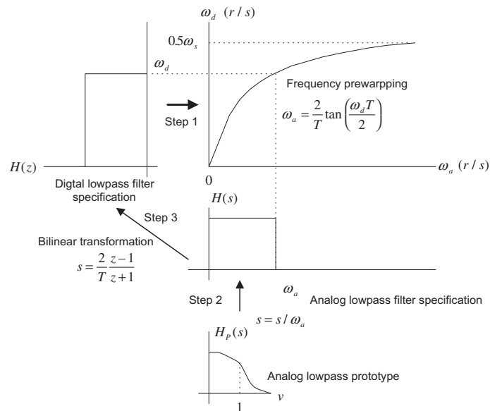
FIG. 8.11 Graphical representation of IIR filter design using the BLT.
Design strategy:
Start from desired digital cutoff/band edges \(\omega_d\).
Convert to equivalent analog prewarped frequencies using
\[ \omega_a = \frac{2}{T} \tan\!\left(\frac{\omega_d T}{2}\right) \]
Design analog filter to meet prewarped analog specs.
Apply BLT to get digital filter.
Result: The digital filter exactly meets the original digital cutoff frequencies, compensating for warping.
8.2.3 BLT Design Procedure – Summary
Step‑by‑step BLT‑based IIR design:
Prewarp digital specs
For lowpass / highpass:
\[ \omega_a = \frac{2}{T} \tan\!\left(\frac{\omega_d T}{2}\right) \]
For bandpass / bandstop:
\[ \omega_{al} = \frac{2}{T} \tan\!\left(\frac{\omega_l T}{2}\right), \quad \omega_{ah} = \frac{2}{T} \tan\!\left(\frac{\omega_h T}{2}\right) \]
Then
\[ \omega_0 = \sqrt{\omega_{al} \omega_{ah}}, \quad W = \omega_{ah} - \omega_{al} \]
Analog prototype transformation
Given a lowpass prototype \(H_P(s)\):
Lowpass:
\[ H(s) = H_P\!\left(\frac{s}{\omega_a}\right) \]
Highpass:
\[ H(s) = H_P\!\left(\frac{\omega_a}{s}\right) \]
Bandpass:
\[ H(s) = H_P\!\left(\frac{s^2+\omega_0^2}{sW}\right) \]
Bandstop:
\[ H(s) = H_P\!\left(\frac{sW}{s^2+\omega_0^2}\right) \]
Apply BLT
\[ H(z) = H(s)\Big|_{s = \frac{2}{T} \frac{z-1}{z+1}} \]
Simplify to standard \(z^{-1}\) form to obtain coefficients \(b_k\), \(a_k\).
MATLAB Support for BLT Design
Table 8.2 – Key MATLAB Functions
Analog prototype transformations
Lowpass to lowpass:
Lowpass to highpass:
Lowpass to bandpass:
Lowpass to bandstop:
Bilinear transformation
Digital frequency response
Where:
Bp, Ap– lowpass prototype numerator/denominator.wa, w0, W– analog cutoff/center/bandwidth in rad/s.B, A– analog filter coefficients after transformation.b, a– digital filter coefficients after BLT.fs– sampling rate in samples/s.
Example 8.6 – Design a Digital Lowpass via BLT
Prototype:
\[ H_P(s) = \frac{1}{s + 1} \]
Design goal:
- Digital lowpass with cutoff \(f_c = 15\) Hz.
- Sampling rate \(f_s = 90\) Hz.
Tasks:
- Derive \(H(z)\) via BLT using prewarping.
- Plot magnitude and phase using MATLAB.
Example 8.6 – Step 1: Prewarp
Digital cutoff frequency:
\[ \omega_d = 2\pi f_c = 2\pi(15) = 30\pi \text{ rad/s} \]
Sampling period:
\[ T = \frac{1}{f_s} = \frac{1}{90} \text{ s} \]
Prewarped analog cutoff:
\[ \omega_a = \frac{2}{T} \tan\!\left(\frac{\omega_d T}{2}\right) = \frac{2}{1/90} \tan\!\left(\frac{30\pi / 90}{2}\right) \]
Compute:
- \(\frac{30\pi}{90} = \frac{\pi}{3}\)
- \(\frac{\pi}{3}/2 = \frac{\pi}{6} = 30^\circ\)
Thus:
\[ \omega_a = 180 \tan(30^\circ) = 180 \cdot \frac{1}{\sqrt{3}} \approx 103.92 \text{ rad/s} \]
Example 8.6 – Step 2: Analog LP from Prototype
Lowpass to lowpass transformation:
\[ H(s) = H_P\!\left(\frac{s}{\omega_a}\right) = \frac{1}{\frac{s}{\omega_a} + 1} = \frac{\omega_a}{s + \omega_a} \]
So
\[ H(s) = \frac{103.92}{s + 103.92} \]
This is the analog lowpass with cutoff at \(\omega_a\) that will yield the desired digital cutoff after BLT.
Example 8.6 – Step 3: Apply BLT
BLT:
\[ s = \frac{2}{T} \frac{z - 1}{z + 1} = 180 \frac{z - 1}{z + 1} \]
Substitute into \(H(s)\):
\[ H(z) = \frac{103.92}{180\frac{z - 1}{z + 1} + 103.92} = \frac{103.92}{\frac{180(z - 1) + 103.92(z + 1)}{z + 1}} = \frac{103.92 (z + 1)}{180(z - 1) + 103.92(z + 1)} \]
To simplify, divide numerator and denominator by 180:
\[ H(z) = \frac{0.5773 (z + 1)}{\left(\frac{z - 1}{z + 1} + 0.5773\right)(z + 1)} = \frac{0.5773 (z + 1)}{(z - 1) + 0.5773(z + 1)} \]
Compute denominator:
\[ (z - 1) + 0.5773(z + 1) = 1.5773 z - 0.4227 \]
So
\[ H(z) = \frac{0.5773 z + 0.5773}{1.5773 z - 0.4227} \]
Divide numerator and denominator by \(1.5773 z\):
\[ H(z) = \frac{(0.5773 z + 0.5773)/(1.5773 z)}{(1.5773 z - 0.4227)/(1.5773 z)} = \frac{0.3660 + 0.3660 z^{-1}}{1 - 0.2679 z^{-1}} \]
So the digital filter is:
\[ H(z) = \frac{0.3660 + 0.3660 z^{-1}}{1 - 0.2679 z^{-1}} \]
Difference equation:
\[ y(n) = 0.3660 x(n) + 0.3660 x(n-1) + 0.2679 y(n-1) \]
Example 8.6 – MATLAB Implementation
Program 8.2 (cleaned‑up)
% Example 8.6: BLT-based lowpass design
fs = 90; % Sampling rate (Hz)
% 1) Prototype: H_P(s) = 1 / (s + 1)
Bp = 1; % Numerator of prototype
Ap = [1 1]; % Denominator of prototype
% 2) Prewarped analog cutoff
fc = 15;
wd = 2*pi*fc;
T = 1/fs;
wa = (2/T) * tan(wd*T/2); % ~103.92 rad/s
% 3) Lowpass prototype -> analog lowpass
[B, A] = lp2lp(Bp, Ap, wa); % Should give B=[wa], A=[1 wa]
% 4) Bilinear transform -> digital filter
[b, a] = bilinear(B, A, fs)
% 5) Frequency response
[hz, f] = freqz(b, a, 512, fs);
phi = 180*unwrap(angle(hz))/pi;
subplot(2,1,1);
plot(f, abs(hz)); grid on;
axis([0 fs/2 0 1.2]);
xlabel('Frequency (Hz)');
ylabel('Magnitude');
subplot(2,1,2);
plot(f, phi); grid on;
axis([0 fs/2 -200 0]);
xlabel('Frequency (Hz)');
ylabel('Phase (degrees)');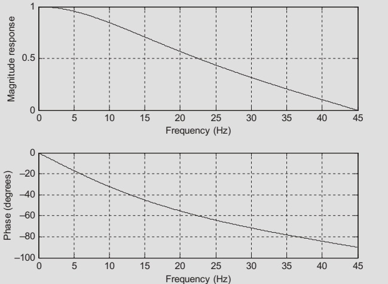
FIG. 8.12 Frequency responses of the designed digital filter for Example 8.6.
Summary / Key Points
IIR filters are recursive digital filters with infinite‑length impulse responses; their transfer functions are rational (ratio of polynomials).
Stability of an IIR filter requires all poles to lie strictly inside the unit circle in the z‑plane.
Using analog lowpass prototypes, we can build analog lowpass, highpass, bandpass, and bandstop filters via standard s‑domain substitutions.
The bilinear transform
\[ s = \frac{2}{T} \frac{z - 1}{z + 1} \]
maps the analog s‑plane to the digital z‑plane in a way that preserves stability and maps the entire \(j\omega\) axis to the unit circle.
BLT introduces frequency warping, described by
\[ \omega_a = \frac{2}{T} \tan\!\left(\frac{\omega_d T}{2}\right) \]
so cutoffs must be prewarped from digital to analog before design.
The BLT design procedure:
- Prewarp digital frequencies → analog.
- Use prototype transformations to get analog \(H(s)\).
- Apply BLT to obtain digital \(H(z)\).
- Verify responses (e.g., using MATLAB
freqz).
Formula Summary
IIR difference equation:
\[ y(n) = \sum_{k=0}^M b_k\,x(n-k) - \sum_{k=1}^N a_k\,y(n-k) \]
IIR transfer function:
\[ H(z) = \frac{Y(z)}{X(z)} = \frac{b_0 + b_1 z^{-1} + \dots + b_M z^{-M}}{1 + a_1 z^{-1} + \dots + a_N z^{-N}} \]
Prototype → analog transformations:
Lowpass:
\[ H_{LP}(s) = H_P\!\left(\frac{s}{\omega_c}\right) \]
Highpass:
\[ H_{HP}(s) = H_P\!\left(\frac{\omega_c}{s}\right) \]
Bandpass:
\[ H_{BP}(s) = H_P\!\left(\frac{s^2 + \omega_0^2}{sW}\right),\; \omega_0 = \sqrt{\omega_l \omega_h},\; W = \omega_h - \omega_l \]
Bandstop:
\[ H_{BS}(s) = H_P\!\left(\frac{sW}{s^2 + \omega_0^2}\right) \]
Bilinear transform:
\[ s = \frac{2}{T} \frac{z - 1}{z + 1},\qquad z = \frac{1 + sT/2}{1 - sT/2} \]
Frequency mapping (warping):
\[ \omega_a = \frac{2}{T} \tan\!\left(\frac{\omega_d T}{2}\right),\qquad \omega_d = \frac{2}{T} \tan^{-1}\!\left(\frac{\omega_a T}{2}\right) \]
Prewarping for band edges:
\[ \omega_{al} = \frac{2}{T} \tan\!\left(\frac{\omega_l T}{2}\right),\quad \omega_{ah} = \frac{2}{T} \tan\!\left(\frac{\omega_h T}{2}\right) \]
with
\[ \omega_0 = \sqrt{\omega_{al}\omega_{ah}},\quad W = \omega_{ah} - \omega_{al} \]
8 Infinite Impulse Response Filter Design
Interactive Deck
Learning with this Interactive Deck
In this deck you will:
- Experiment with simple IIR filters numerically.
- See how analog–digital mapping behaves via the bilinear transform.
- Interactively explore frequency warping and prewarping.
- Use Pyodide (Python in the browser), Observable JS, and Plotly to connect formulas to behavior.
All code runs in your browser – feel free to tweak and rerun.
1. Hands‑On: Simulating a Simple IIR Filter
Recall Example 8.1:
\[ y(n) = 0.2x(n) + 0.4x(n-1) + 0.5y(n-1) \]
This block:
- Implements the IIR difference equation.
- Computes the impulse response for a few samples.
- Prints the results so you can compare with the book.
Try: change coefficients and see how the response changes.
2. Visualizing IIR Feedback Behavior
Let’s visualize the effect of recursion for different feedback coefficients \(a_1\).
Use the slider to choose \(a_1\) and compare impulse responses.
3. Exploring Analog Lowpass Prototype Scaling
Prototype:
\[ H_P(s) = \frac{1}{s + 1} \]
Practical analog lowpass with cutoff \(\omega_c\):
\[ H(s) = \frac{\omega_c}{s + \omega_c} \]
Explore how changing \(\omega_c\) affects the magnitude response at a few frequencies.
4. Bilinear Transform: s ↔︎ z Mapping Playground
BLT:
\[ s = \frac{2}{T} \frac{z - 1}{z + 1}, \quad z = \frac{1 + sT/2}{1 - sT/2} \]
Use this block to:
- Enter a complex \(s = \sigma + j\omega\).
- See the mapped \(z\) and its magnitude / angle.
- Check if it lands inside / on / outside the unit circle.
5. Frequency Warping – Analog vs Digital
Warping relation:
\[ \omega_a = \frac{2}{T} \tan\!\left(\frac{\omega_d T}{2}\right) \]
We’ll:
- Use a slider for digital frequency \(\omega_d\).
- Plot the mapping function \(\omega_a(\omega_d)\) over the whole band.
- Mark the chosen \(\omega_d\) and its corresponding \(\omega_a\).
6. Prewarping Practice – Lowpass Design
We’ll simulate the prewarping step for a digital lowpass cutoff specification.
Given
- Target digital cutoff: frequency in Hz.
- Sampling frequency: \(f_s\).
Compute:
\(\omega_d = 2\pi f_c\).
\(T = 1/f_s\).
Prewarped \(\omega_a\):
\[ \omega_a = \frac{2}{T} \tan\!\left(\frac{\omega_d T}{2}\right) \]
Interactively compute and visualize.
7. Full Mini‑Design via BLT (Interactive)
We’ll recreate a simplified version of Example 8.6, but now you control the specs:
Steps inside the block:
- Compute digital cutoff ω_d from chosen f_c and f_s.
- Prewarp to analog ω_a.
- Design analog \(H(s) = \dfrac{\omega_a}{s + \omega_a}\) (1st order).
- Apply BLT to find digital \(H(z)\).
- Plot the magnitude response (Hz).
8. Challenge: Explore Bandpass Prewarping
For a bandpass design, we need to prewarp both edges:
\[ \omega_{al} = \frac{2}{T}\tan\left(\frac{\omega_l T}{2}\right),\quad \omega_{ah} = \frac{2}{T}\tan\left(\frac{\omega_h T}{2}\right) \]
Then
\[ \omega_0 = \sqrt{\omega_{al}\omega_{ah}},\quad W = \omega_{ah} - \omega_{al} \]
Use the following block to compute and visualize how analog band edges differ from digital ones.
9. Wrap‑Up: What You Should Be Able to Do Interactively
Using the tools in this deck, you should now be able to:
- Simulate and visualize IIR impulse responses for different feedback coefficients.
- Observe how analog lowpass parameter \(\omega_c\) shifts the −3 dB point.
- Experiment with the bilinear transform mapping from \(s\) to \(z\), and see its stability‑preserving nature.
- Plot and understand frequency warping between \(\omega_a\) and \(\omega_d\).
- Compute and use prewarped analog cutoffs for BLT‑based IIR design.
- Perform a mini BLT lowpass design end‑to‑end and inspect its response.
You are encouraged to modify all sliders and code examples and see if you can “break” the design or create unexpected behaviors – then explain why it happens using the underlying theory.